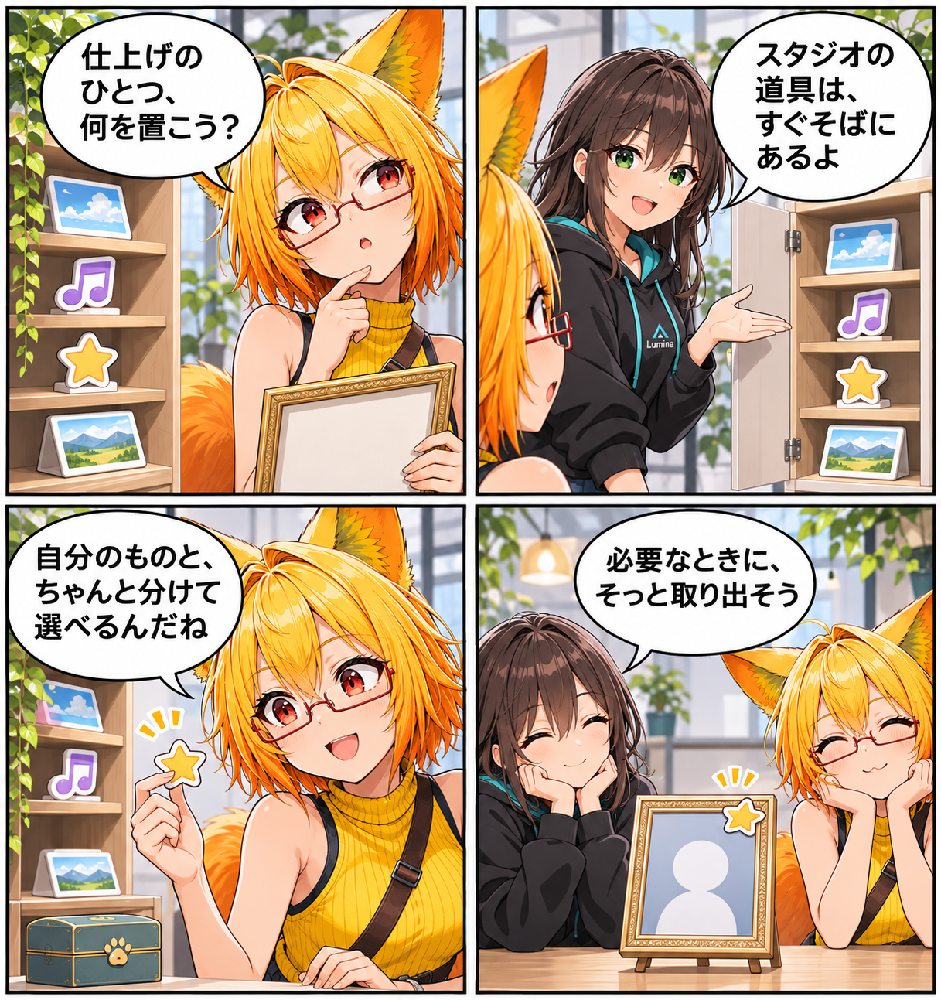

2026.11.24 / Development Log / Feature Spotlight
閑話休題：スタジオの道具を、すぐそばに
新規実装の報告ではなく、VRASに既にあるManagedLibraryを紹介します。アプリに同梱したスタジオ用コンテンツを必要なときに使い、ユーザーが管理するコンテンツとは分けて扱うための既存機能です。
今回は feature-spotlight（機能紹介） です。集計期間は2026-11-23 03:00:00 JSTから2026-11-24 02:59:59 JSTまで、対象はViewerの
main です。集計終了時点のHEADは c33733a41be121b814a1732df8c9eae089ace2ea、期間内コミットは0件でした。Assets/Scenes/MainScene.unity の未コミット差分は、期間内に実装された事実を確定できないため実績には含めていません。
最初からある道具を、必要なときに
ManagedLibraryは、VRASに同梱するコンテンツを扱うための仕組みです。開発中の収録元は Assets/ManagedLibrary、Windows Playerでは VRAS_Data/ManagedLibrary.vml を使います。
スタジオづくりの選択肢
VABアバター、背景、Skybox、アニメーション、シーケンス、音声、ステッカー、ロゴといった同梱コンテンツを扱えます。内蔵アイテムのPrefabは、Unity Asset参照で収録されます。
自分のものと混ぜない
Playerは起動時にManagedLibraryの索引をマウントし、内容は必要になった時点で取り出します。ユーザーが管理するコンテンツは UserData 側に分かれているため、同梱物と同じ置き場に混ぜずに扱えます。
4コマの話
ろひは仕上げのひとつを探し、ルミナはすぐそばの道具棚を示します。自分の大切な箱とは分けたまま、必要なものだけを選ぶ小さな場面にしました。今日は新規実装の報告ではなく、既存のManagedLibraryを使うときの感覚を描いています。
まとめ
ManagedLibraryは、同梱コンテンツを必要なときに扱いながら、ユーザー管理のコンテンツと分ける既存機能です。スタジオづくりの選択肢を、すぐそばに置く役割を取り上げました。